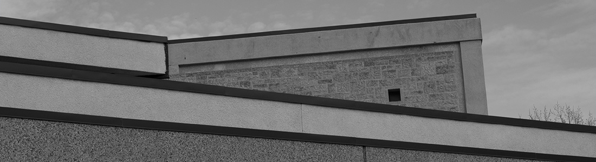

Currently accepting grad students.
My work is in topology and group theory, specifically left-orderable groups and their relationship with three-dimensional manifolds. All work will therefore require a background in group theory and/or topology, but for a MSc a solid undergraduate education and a willingness to learn is probably enough!
Projects suitable for a MSc or a PhD in these fields are appealing for two reasons:
First, perhaps most appealing reason, is that the projects are approachable. It is very easy to start doing research that is important and publishable. One does not need to spend years learning background material in order to attack the open problems, despite the fact that results can be significant and deep. This means, for example, that publishing the results of your MSc thesis is a real possibility. If you know a little bit a group theory this problem is likely something that you could begin working on tomorrow, though understanding why the problem is significant will take time.
The second reason is that in this area of research the mathematical ideas one can develop and the connections one can make are potentially quite deep, despite the approachability of the open problems. What I mean by this is that in order to give context to the problems and understand their significance, one needs to dig deeply into topics of 3-manifold theory, knot theory and group theory. This is the part of mathematics that I enjoy.